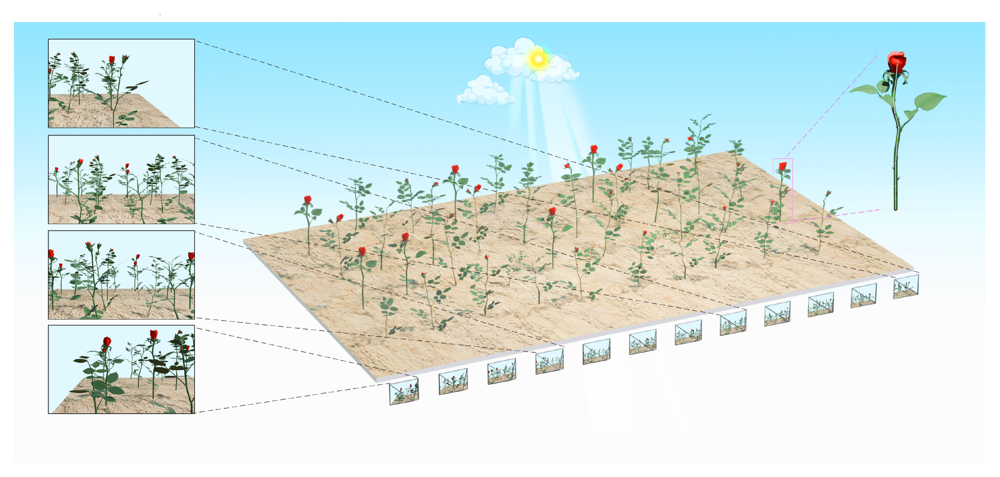

Diverse rose scenes collected in operational greenhouses.
Rosetum3D: A Large-Scale 3D Vision Dataset from Preharvest Roses
Yunnan University
ECCV 2026 Submission

Abstract
The global rose cultivation industry has experienced continued expansion in recent years. There has been a set of value evaluation criteria covering multiple dimensions for roses. However, the evaluations are mainly conducted by human experts after harvesting, which is time-consuming and labor-intensive. 3D computer vision technologies are promising to automate the process before harvesting, but the lack of large-scale datasets with localization annotations that capture plant architecture hinders the progress. To bridge this gap, we propose Rosetum3D, which is a large-scale 3D vision dataset for preharvest roses. The dataset is constructed via occlusion-robust multi-view RGB-D capture protocols in commercial greenhouses. We provide fine-grained 2D localization labels using bounding boxes and botanically defined keypoints, and then obtain the 3D structures recovered through depth backprojection. Rosetum3D contains 21,114 images and 46,848 annotated rose objects. Models trained on Rosetum3D have achieved 2D/3D rose localization, which is a crucial step for automated preharvest quality grading and growth monitoring. Beyond localization, Rosetum3D serves as a benchmark for agricultural vision tasks, including 2D rose object detection, local feature matching, depth estimation, and instance re-identification. By enabling data-driven precision agriculture, Rosetum3D paves the way for robotic harvesting systems and AI-driven yield prediction in protected cultivation.
Rosetum3D Dataset
Rosetum3D is presented in the paper as a large-scale RGB-D dataset for preharvest rose analysis. It is built for occlusion-heavy floriculture scenes where direct 3D annotation is difficult, and it turns synchronized multi-view RGB-D capture into a benchmark for localization and broader agricultural perception.
RGB frames with synchronized depth observations.
Rose instances annotated for localization.
2D/3D keypoint annotations across all rose objects.
40,759 training objects and 6,089 testing objects.
Mean absolute error across 137 tape-measure validations.
Overview
Rosetum3D is designed around dense preharvest rose cultivation rather than generic indoor or autonomous-driving scenes. The emphasis is on plant architecture, occlusion robustness, and instance-level geometric understanding before harvesting.
Sensors and Capture
The dataset uses Orbbec Gemini 335L or 336L RGB-D cameras with synchronized depth and color capture at 30 Hz and 1280 × 800 resolution, collected under real greenhouse operating conditions.
Annotation Strategy
Each rose is first labeled in 2D with bounding boxes and botanically defined keypoints, then reconstructed in 3D via synchronized depth backprojection. This hybrid pipeline avoids fragile direct 3D labeling in occluded scenes.
Task Coverage
The benchmark covers 2D object detection, 2D keypoint localization, monocular depth estimation, local feature matching, instance re-identification, and 3D rose keypoint localization.
Collection and Annotation
Capture Setup
- Orbbec Gemini 335L or 336L stereo RGB-D cameras.
- 30 Hz synchronized depth and color acquisition.
- 1280 × 800 resolution for both depth and RGB frames.
- Chest-mounted sensing with an Android device.
- Checkerboard-based RGB-D calibration.
Greenhouse Protocol
- Operators move parallel to plant rows at 0.3-0.5 m/s.
- Acquisition distance is maintained at 0.8-1.2 m.
- Data is collected in operational commercial greenhouses.
- Sequences span diverse rose varieties and growth stages.
- The setup is designed for severe occlusion patterns.
Primary Keypoints
- Corolla Center
- Sepal-Pedicel Junction
- Stem-Pedicel Transition
- Median Point
- Soil-Emergence Point
Annotation Details
- Bounding boxes and keypoints are labeled in 2D first.
- Four auxiliary inter-points improve interpolation.
- Occluded points are flagged with an invisible attribute.
- Objects smaller than 32 × 32 pixels are excluded.
- All 2D keypoints are backprojected into 3D coordinates.
Benchmarks
The paper evaluates Rosetum3D as a multi-task benchmark for agricultural vision. Beyond rose localization, it reports results on object detection, keypoint localization, monocular depth estimation, local feature matching, instance re-identification, and 3D rose keypoint localization.
2D Object Detection
Best AP: 35.0
YOLOv5 reports the strongest rose detection baseline in the paper.
2D Keypoint Localization
Best AP with GT boxes: 42.1
ViTPose reaches the highest reported AP when ground-truth boxes are provided.
Depth Estimation
Best AbsRel: 0.165
Depth benchmarking uses 33,019 aligned RGB-D image pairs, with BinsFormer as the best fine-tuned result.
Feature Matching
Best AUC@5°: 72.3
RoMa performs best on Rosetum3D-1800, a benchmark of 1,800 image pairs.
Instance Re-ID
Best mAP / Rank-1: 80.7 / 96.0
The instance re-identification benchmark covers 1,923 individuals across 36,712 images.
3D Rose Localization
MPJPE: 556.8 → 539.1
The paper's multi-frame strategy improves over the single-frame top-down baseline.
BibTeX
@misc{rosetum3d2026,
title={Rosetum3D: A Large-Scale 3D Vision Dataset from Preharvest Roses},
author={Anonymous},
year={2026},
note={ECCV 2026 submission}
}Acknowledgements
Acknowledgement content will be added here.